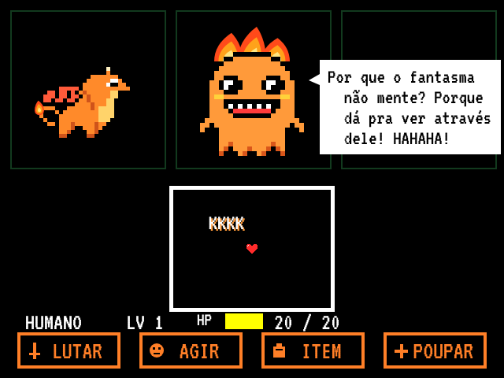
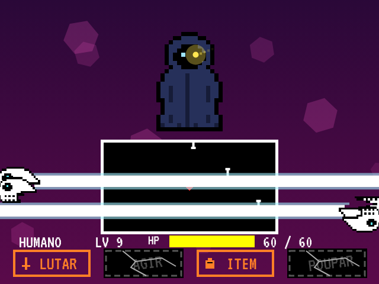
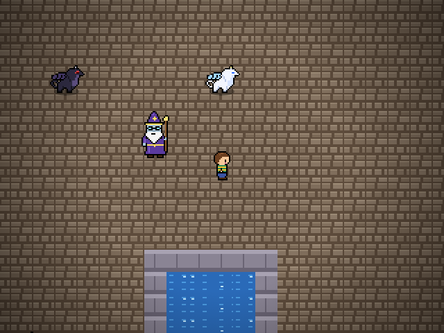
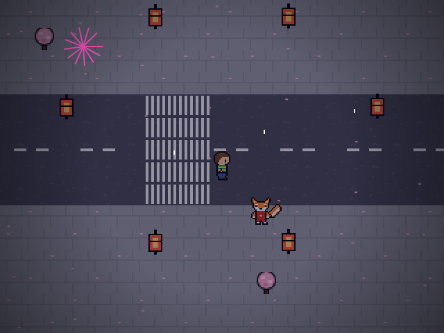
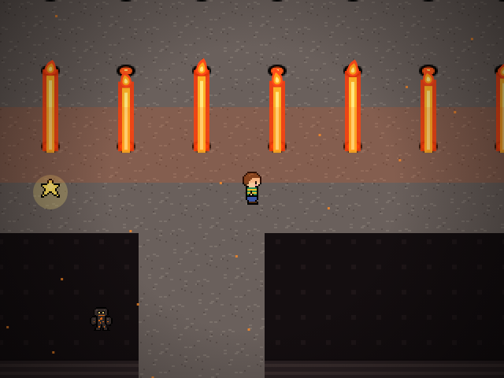
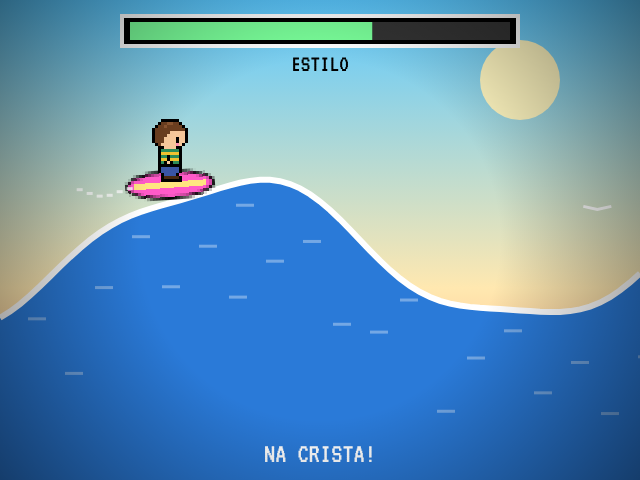

IMAGENS






RECURSOS
BATALHAS
LUTAR, AGIR, ITEM e POUPAR. Desvie dos ataques com a sua ALMA.
3 ROTAS
Pacifista, Neutra ou Genocida: suas escolhas mudam a história.
DRAGÃO
Escolha um dragão parceiro que evolui no topo de um vulcão.
GRUPO
Kai e Luna lutam do seu lado, como no Deltarune.
14 FASES
Labirinto, cidades, ilha, caverna, vulcão, arena, praia e mais.
GRÁTIS
No navegador, no Android e no Windows, com atualização automática.
MULTIPLAYER
PC, celular e navegador jogam juntos, pela internet e sem VPN. Crie uma sala, passe o código e até 4 amigos entram. Quanto mais jogadores, mais difícil fica.
BAIXAR
| Plataforma | Como jogar |
|---|---|
| Navegador | Jogar agora, sem instalar nada (PC ou celular). |
| Android 7.0+ | Baixe o Perdido.apk e instale. Permita "fontes desconhecidas" se o Android pedir. |
| Windows 10/11 | Baixe o Perdido-Setup.exe. Se o Windows avisar, clique em "Mais informações" e depois em "Executar assim mesmo". |
CONTROLES
| Ação | Celular | Teclado |
|---|---|---|
| Andar | Analógico | Setas / WASD |
| Confirmar | Botão A | Z / Enter |
| Cancelar / menu | Botão B | X / Esc |
| Mover a alma | Analógico ou arrastar | Setas |